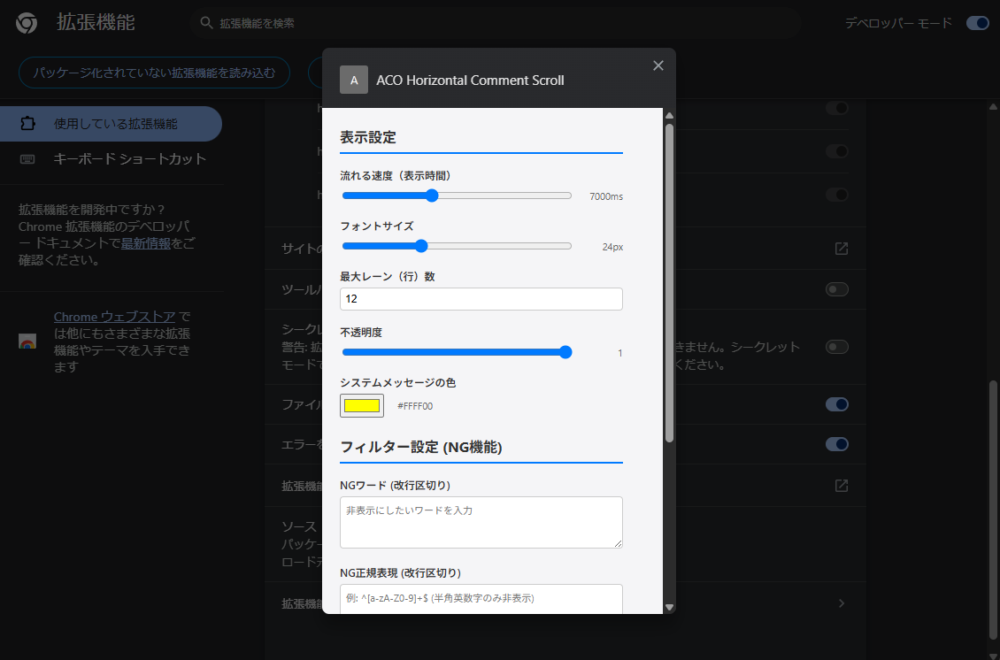
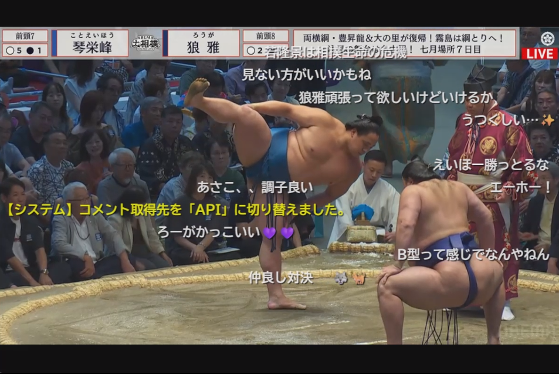

某動画サイト風にコメントを流すAbemaTV用ブラウザ拡張機能


※コメントが流れる様子のデモ動画
AbemaTVの視聴ページにて、画面を広く使いながらコメントを楽しめるようにする非公式拡張機能です。
※オーバーレイ自体の表示ON/OFFは、プレイヤー右下に追加された専用トグルボタンでいつでも切り替え可能です。
chrome://extensions）を開きます。
about:debugging と入力し移動します。
manifest.json を選択します。
以下の環境にて動作を確認しています。これ以外のバージョンでも概ね動作する設計ですが、アップデートにより動作が不安定になる可能性があります。
本拡張機能は、ユーザーのプライバシーと安全を最優先に設計されており、プログラムのソースコードはすべてGitHubにてオープンソース（MIT License）で開示されています。
manifest_version: 3
(最新のセキュアな拡張機能仕様) を採用しています。 *://abema.tv/*
(content_scripts):
配信ページ上にコメントを重ねて描画するために使用します。
storage (permissions):
ユーザーの設定値（フォントサイズやNGワードなど）をブラウザ内部に保存・同期するために使用します。
webRequest &
https://*.akamaized.net/* (host_permissions):
プレイヤーが読み込むメディアセグメントのURL変化をローカルで監視し、番組スロットIDの切り替え（番組改編）を自動検知するために使用します。
https://api.p-c3-e.abema-tv.com/*
(host_permissions):
コメント欄を閉じた状態（API監視モード）の時に、公式コメントAPIからデータを直接フェッチするために使用します。
本アドオンを不要になった場合は、以下の手順で完全に削除してください。
chrome://extensions）を開き、本アドオンの「削除」ボタンをクリックしてください。
about:addons）を開き、本アドオンの横の「…」から「削除」を選択してください。
ブラウザの機能削除に加え、ディレクトリを手動削除することでPC内から完全に削除されます。
これ以外にシステム設定ファイル等が残ることはありません。
アドオンの挙動が不安定になった場合は、以下の手順を上から順にお試しください。
コメントブロックを開くと右端から左側にブロックがせり出す、この時とコメントの排出が重なることで
スクリーン領域が一瞬で変化することによるコメントの衝突（重なり）が発生する事がある。
仕様上モードの切り替えを告知するシステムメッセージが衝突しやすい。
コメントオーバーレイの表示・非表示トグル用、拡張機能専用ボタンが押せなくなることがある。（特にChrome環境下）
公式のSPAによるレンダリングの上書きや既存要素の破壊によってボタンがゴースト化することに起因する。
ウインドウを一度最大化して戻す等の操作（レンダリングの強制）を行えば多分押せるようになったりする。
本アドオンにはDOM監視とAPI監視の2つのモードがあります。公式側の描画負荷（DOM生成プロセス）と、拡張機能によるAPIポーリング負荷（ネットワークリクエスト）のどちらが軽量かは状況に依存します。
そのため、可能な限り公式コメント欄を展開した状態での「DOM監視モード」での視聴を推奨いたします。こちらは配信サービス本来の仕組みを尊重し、不要な通信を避ける最も安定した視聴スタイルであると考えています。API監視は、あくまでプレイヤーの没入感を優先し、コメント欄を閉じたい場合の代替手段としてご利用ください。
GitHubのIssueと連動しています。バグ報告や機能要望はこちらからどうぞ。
新規スレッドを投稿するスレッドを取得中...